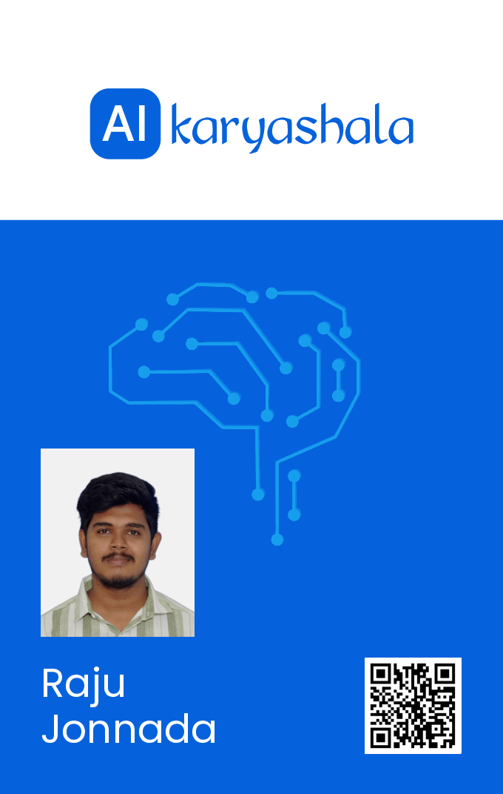
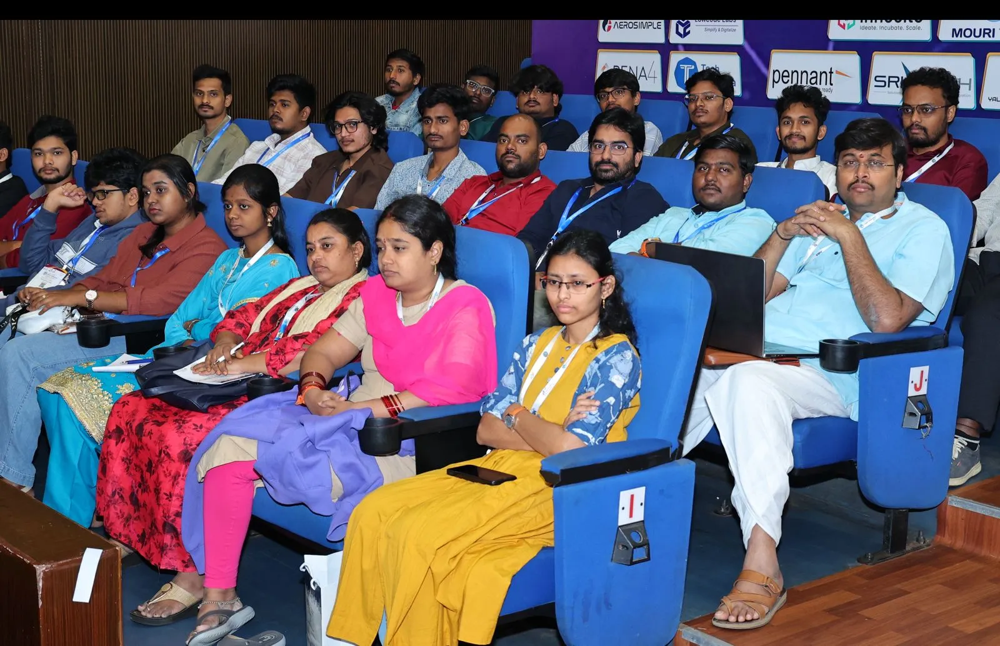
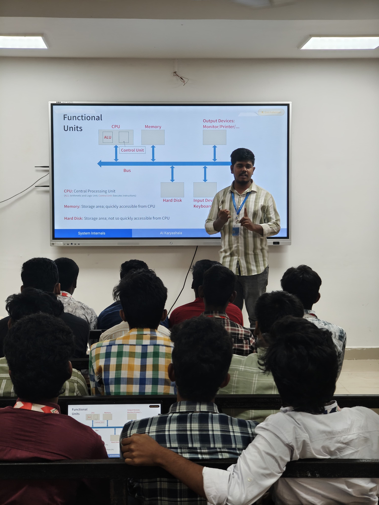
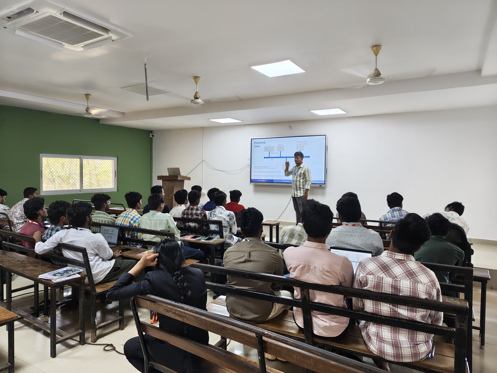
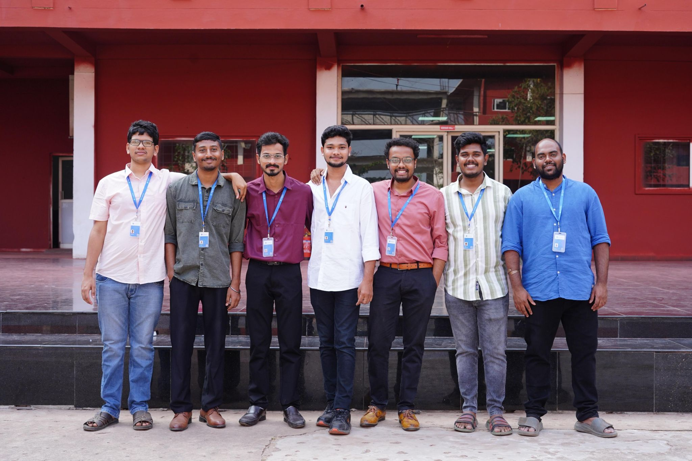
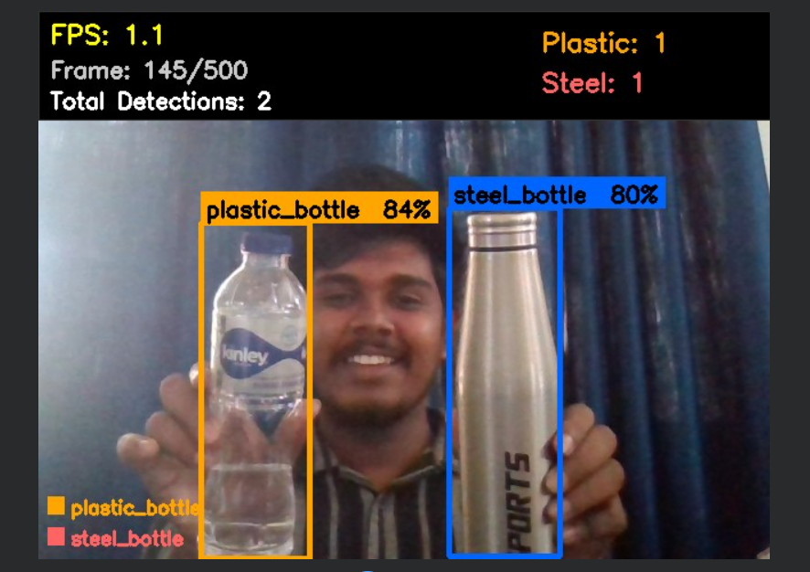
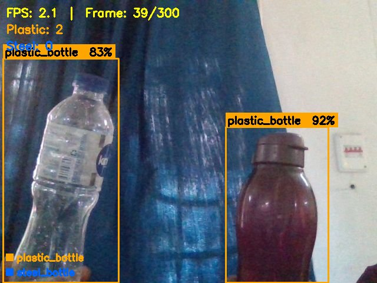

My Journey
From struggles to success
Hello, I am Raju Jonnada from Gayatri Vidya Parishad College of Engineering, Visakhapatnam in the field of Information Technology.
After completing graduation in 2025, I have faced difficult phase in my career. In campus placements I have attended multiple interviews but I not cleared any of them. This made me clueless what i am going wrong. After campus placements done i am thinking what to do next at that time i am searching different coaching institutes in Vijayawada and Hyderabad who gives best learning with placement opportunity, but i realized they were not giving practical knowledge.
At that time, my friend Pavan Kumar Varanasi suggested me to join AI Karyashala. Joining in AI Karyashala became a turning point of my career. In AI Karyashala, I have learnt everything from scratch like writing on paper Algorithms to AI Agents.
I have started doing what I have learned and experienced through small projects. One of my first project was creating a Python script to generate ID cards with QR codes along with my friend Siva Rama Krishna Malla. At that time i felt confident what i have done and doing.

One of the best experience was attending APDTS, Where I have learned about How AI is evolving in multiple sectors. At that time I have thought what we can really do with AI. It changed my entire mindset about AI. I also got an overview of how AI is evolving in the real world when my mentor Rohini Kumar Barla shared his experience from an AI Summit in Delhi. This helped me understand the big picture of AI.


Another major important step is teaching. I participated in a 2-day bootcamp at KIET College, where I explained topics like Version Control and Linux to around 60–80 students. Standing in front of that many people and teaching gave me a lot of confidence and helped me improve my communication skills.



I also got an overview of how AI is evolving in the real world when my mentor shared insights from an AI Summit in Delhi. This helped me understand the bigger picture of AI and where the industry is heading.
After that I have participated in a 24-hour buildathon conducted by AI for Vizag. build a project AI Banking Data Assistant and integrated speech-to-text in multiple language like Telugu, Hindi and English using sarvam.ai and also deployed project in render which we are explored in AI Karyashala.
One student came from Andhra University and told about his project related to model training using YOLOv8 for bangle detection. It motivated me to build this type of project so i have done water bottle detection project using the YOLO model, where I learned how models are trained and how object detection works in real-world scenarios.


At the same time, I explored modern AI concepts like Large language Models, Retrieval Augmented Generation and AI Agents. I also worked with tools like Ollama and OpenClaw. This helped me understand how AI applications are built.
After Course ending my mindset fully changed from confusion to confident on building AI-based applications.
Finally, I secured 2-month internship with placement at Optficail.ai as a Graduate Engineer Trainee.